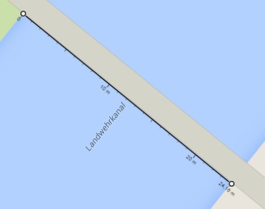

Demonstrates the dynamic measure control to measure and see measurements beside the cursor.
(leave blank for all)
Measure the bridge in the center of the mapExtent.
The real length of the bridge is between 24 and 25 meters. Without geodesic:true you get a wrong measurement!

Hint from Andreas Hocevar: Geodesic calculation works the same in both the ScaleLine and Measure controls, so it has the same prerequisites. The advice that proj4js is needed to make it work is only true to the extent it is with any reprojection in OpenLayers: as long as your map is in EPSG:900913, you don't need proj4js. As soon as you use a different projection, you need it. http://osgeo-org.1560.x6.nabble.com/Getting-the-right-results-from-Measure-tool-using-EPSG-3776-tp3921884p3921894.html